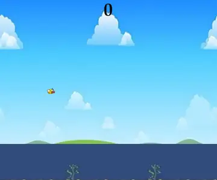
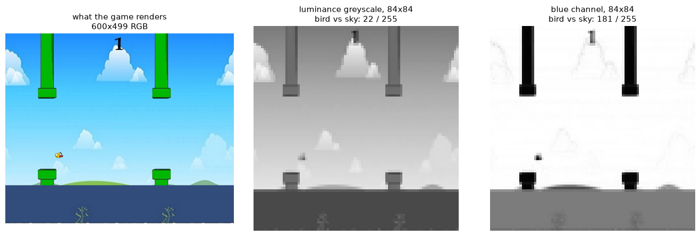
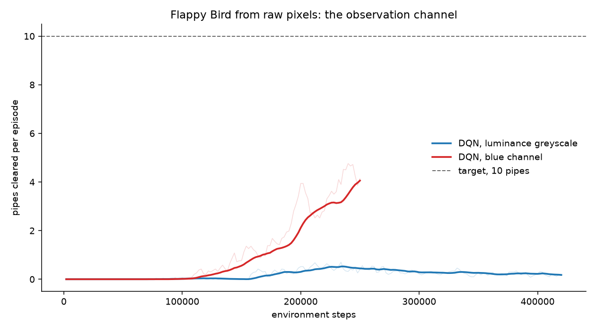
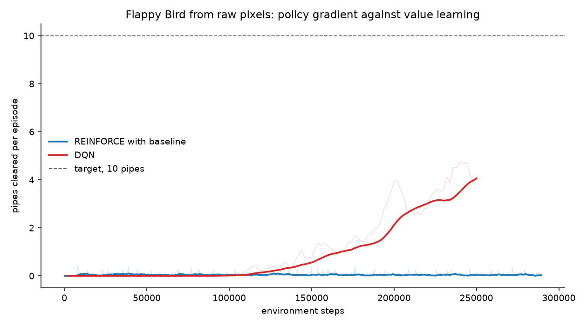
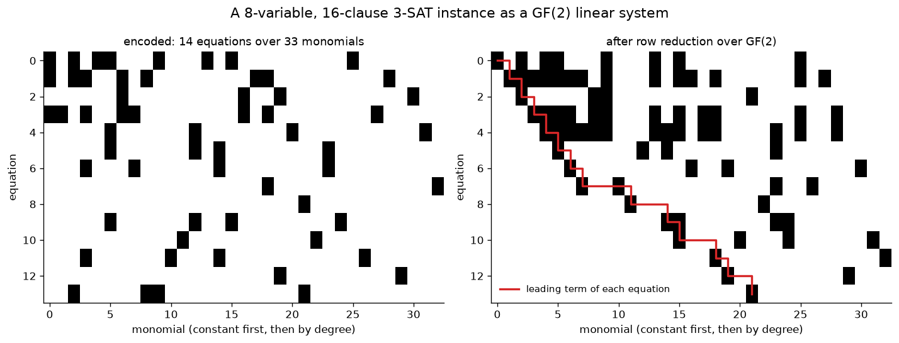
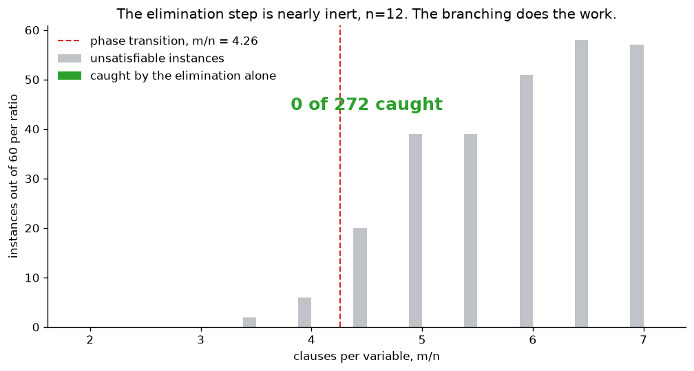
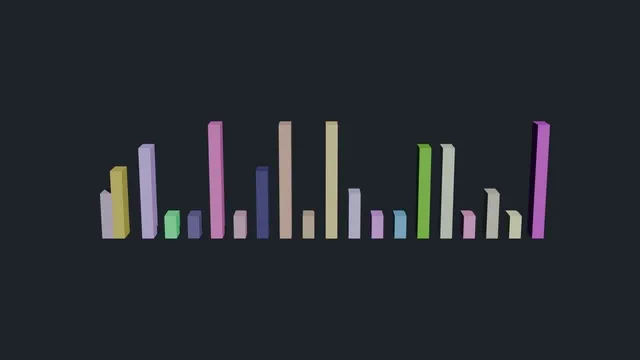
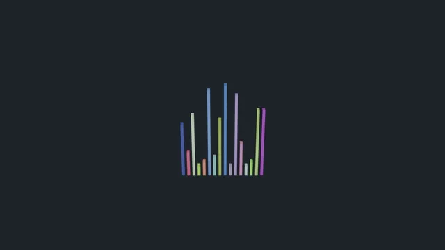
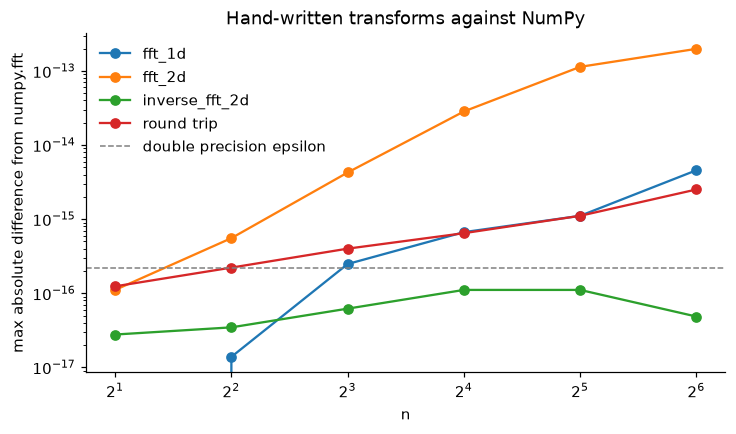
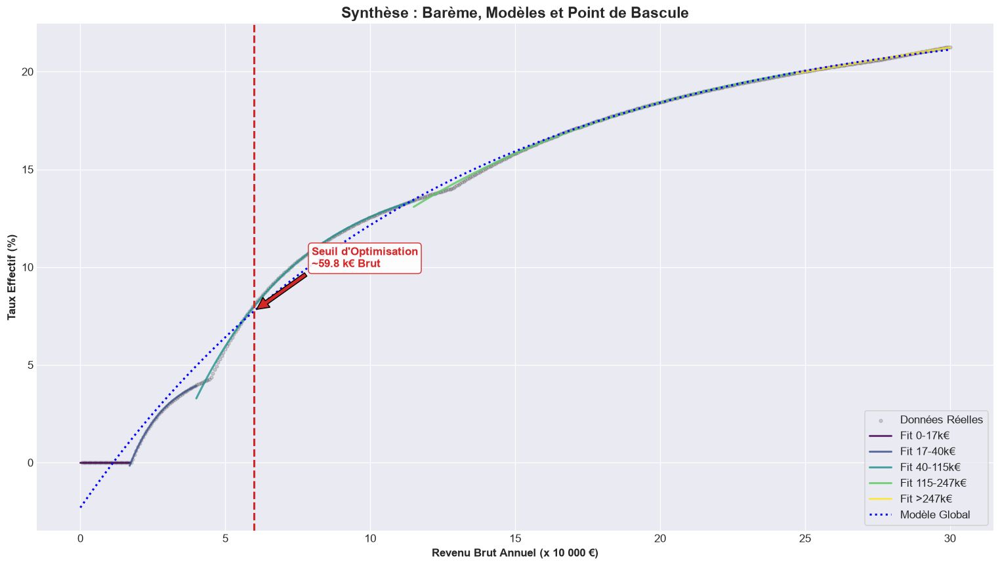

What I build when I am bored.
Nobody assigned any of it and none of it is coursework: it is what a free evening turns into, in machine learning, computer algebra and applied mathematics. Each project stands alone. Every number on this page is produced by code in the repository, and CI reruns the checks on every push.
12.21 pipes per episode over 100 greedy episodes, best 61, trained in 23 minutes on one RTX 4060

The agent plateaued for a long time and no hyperparameter fixed it. The bird is yellow, the sky is light blue, and the two are nearly equiluminant, so the standard luminance greyscale every Atari pipeline uses was giving the bird 22 levels of contrast out of 255 while the pipes got 64. Taking the blue channel instead gives 181.



Greyscale needed 200k steps to clear its first pipe and never passed 0.80. The blue channel cleared one at 50k and passed ten at 250k. The write-up also keeps the run that failed, and a scaling bug of mine that made a value loss 224 times the policy loss.
0 wrong verdicts on 500 instances checked against exhaustive search

Clauses become polynomials over GF(2), a triangular Gröbner-style elimination propagates what it can, and branching finishes the job. Verdicts are checked by validating the returned assignment, not just the SAT or UNSAT answer.
The part worth reading is where it refuses to oversell itself. The elimination step alone is sound but weak: across 285 genuinely unsatisfiable instances it flagged one, and at n=20 it resolves 0.00% of systems on its own, so essentially all the work is done by the branching. The benchmark ratio is also below the random 3-SAT phase transition, which means a high success rate there measures the instance distribution rather than the solver. The folder also keeps a paper of mine from 2023 whose central claim is wrong, with the failing line located and explained.

1407 and 801 frames at 1080p24, rendered headless in 4 and 2 minutes


Both are driven entirely from Blender's Python API and render from the command line. The scripts previously could not be rendered at all: they delete the default camera and light on their first line and set no frame range, so Blender's stock limit of 250 frames captured 18% of bubble sort against a black screen.
11 checks against NumPy, matching to 1e-13

numpy.fft up to n=64.
An FFT, a determinant through the Schur complement, an exact integer matrix
inverse and a trace that never forms the product. NumPy appears throughout as
the oracle each result is checked against, never as the implementation: the
determinant does not call numpy.linalg.det and the transforms do
not call numpy.fft.
None of them is fast, and each notebook plots its own cost so the gap is
visible rather than implied. The inverse is exact rather than nearly right:
A @ A_inverse is the identity, not close to it.
The tipping point is 59 800 EUR gross a year

Where does an extra euro of gross salary stop being worth much? Fitting the
effective rate as an exponential approach to an asymptote and solving for
where its slope stops growing needs the Lambert W function, because the
equation takes the form v·e^v = c. Both branches are computed and
the one that lands inside the income range is kept.
Read the full report, in French.